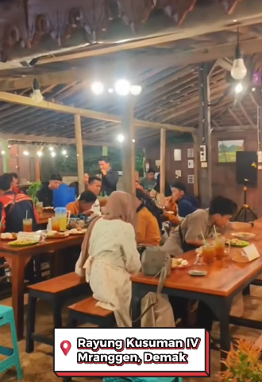
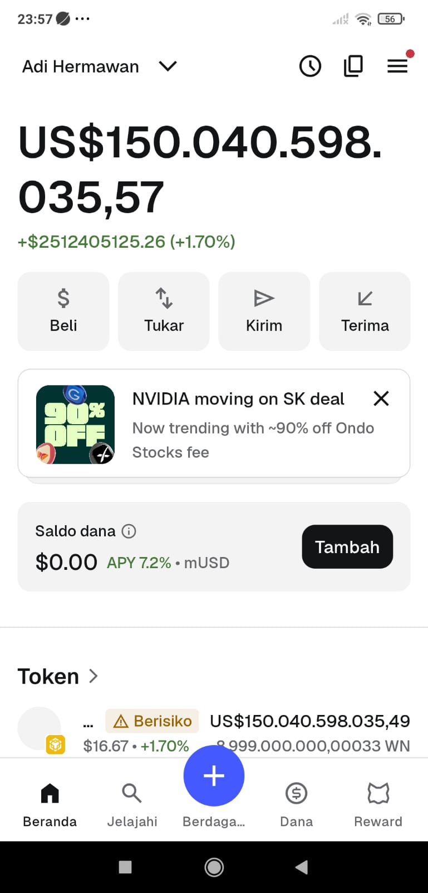

Nongkrong santai, makan bareng keluarga, sampai kumpul bestie. Menyuguhkan menu rumahan khas Jawa dengan cita rasa mantap, suasana adem tepi sawah, dan harga ramah di kantong!
Rasakan kehangatan kumpul bersama di bangunan joglo kayu bernuansa pedesaan

Ramai dikunjungi keluarga & komunitas untuk menikmati santapan khas Jawa.
Nikmati hembusan angin sepoi-sepoi dan pemandangan hijau persawahan yang menyejukkan mata saat menyantap hidangan.
Tempat yang luas, hangat, dan ramah untuk acara arisan, kumpul komunitas, atau sekadar makan siang bersama keluarga.
Gaya arsitektur bernuansa nostalgia rumah Mbah dengan lampu gantung hangat dan ornamen tradisional.
Warung Ndelik memadukan kearifan lokal kuliner Jawa dengan teknologi Blockchain ERC-20 Smart Contract.
Warung Ndelik
$W / WN
100 B ($WN)
18
Tampilan integrasi ekosistem token $WN pada dompet digital (Web3 Wallet).

*Tampilan saldo $WN di Trust Wallet / Web3 AppToken $WN dapat langsung dibaca dan disimpan di berbagai dompet Web3 terkemuka (OKX Wallet, Trust Wallet, MetaMask).
Menunjukkan transparansi jumlah alokasi koin yang siap diintegrasikan ke kasir fisik Warung Ndelik.